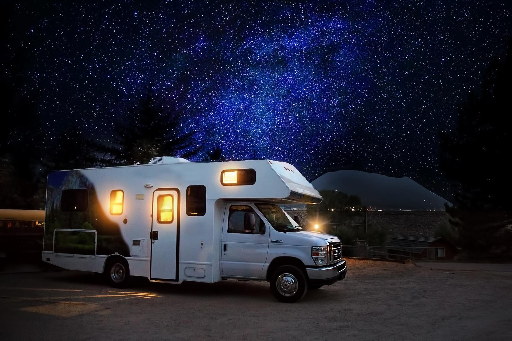

Carros

Viajar de carro é uma das formas mais clássicas de explorar o mundo, oferecendo uma dinâmica completamente diferente das viagens de avião ou comboio. Esta modalidade combina uma enorme sensação de liberdade com a necessidade de uma gestão logística rigorosa. Abaixo, encontram-se três grandes qualidades e três principais defeitos de fazer uma viagem de carro: Qualidades (Vantagens) • Liberdade e flexibilidade total: Não existem horários rígidos de embarque nem itinerários fixos. Se encontrar uma paisagem bonita, uma vila charmosa ou um restaurante convidativo no caminho, pode simplesmente parar. O viajante dita o próprio ritmo. • Capacidade de bagagem facilitada: Ao contrário das restrições severas de peso e tamanho das companhias aéreas, no carro o limite é o espaço da mala. Pode levar objetos maiores, mudas de roupa extra e até trazer recordações ou produtos locais pesados sem a preocupação de pagar taxas adicionais. • Economia em viagens de grupo: Quando se viaja em família ou com amigos, os custos com combustível e portagens são divididos por todos. Isto torna a viagem significativamente mais barata por pessoa do que comprar múltiplos bilhetes de avião ou de comboio. Defeitos (Desvantagens) • Desgaste físico e cansaço do condutor: Conduzir durante muitas horas exige uma concentração constante. O trânsito, as condições meteorológicas ou estradas desconhecidas geram fadiga acumulada, o que exige paragens frequentes para descanso e pode reduzir a energia para aproveitar o destino. • Imprevisibilidade e riscos mecânicos: Um furo num pneu, uma avaria no motor ou um acidente podem interromper os planos de imediato. Depender de um veículo significa estar sujeito a imprevistos logísticos e financeiros com oficinas ou serviços de assistência em viagem. • Maior tempo de deslocação: Para destinos muito distantes, o carro consome dias inteiros de viagem que poderiam ser resolvidos em poucas horas de avião. Isto reduz o tempo líquido disponível para desfrutar efetivamente do local de férias. Se estiver a planear uma viagem destas, é essencial ponderar estas vantagens e desvantagens para decidir se o carro é a melhor opção para si.
Aviões

MotorHome
